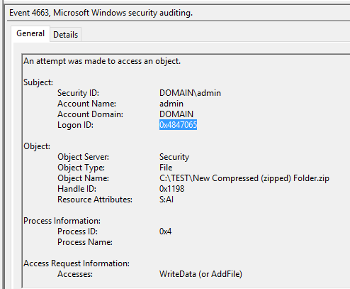
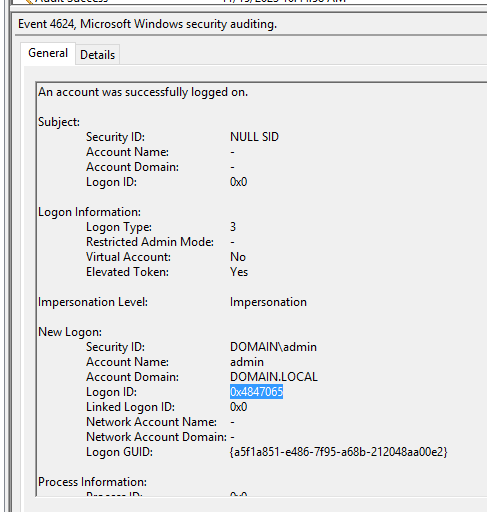
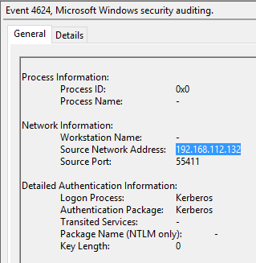
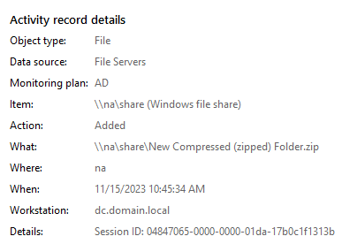

Overview
How to validate data from Netwrix Auditor Activity Records?
Instructions
For example, Netwrix Auditor determines the Workstation field of changes made in the File Server data source by matching the Logon ID from a Logon event with the change event.
In order to detect changes, the product collects events with certain IDs (4633 and
others). Those events themselves do not contain any originating workstation information.
However, they have a field with a distinct Logon ID that can be matched to the
Logon ID in local logon events (ID 4624).
There might be several open
sessions on different workstations for a single user, or no recent logons or logoffs
events on workstations registered. In this case, the Workstation field
might be returned as unknown in Activity Summary, reports, and search
results.
Logon events, in turn, include the Source Network Address for the originating workstation which is then resolved to FQDN and displayed in Netwrix Auditor.
The simplest example (adding a file).
LogonID of the events 4656
and 4663:

Matches to the LogonID of the logon event:

Which also contains the Source Network Address:

Which is resolved to the FQDN name:

TIP: For testing purposes in the lab, it'd be better to use a dedicated account or do a sign-in/sign-out for the currently used one.
IMPORTANT: If the product reports the Workstation field as
NULLthen in both: Search and SSRS reports this field will be hidden for those Activity Records. There is a common Auditor logic specifically for the Workstation field.